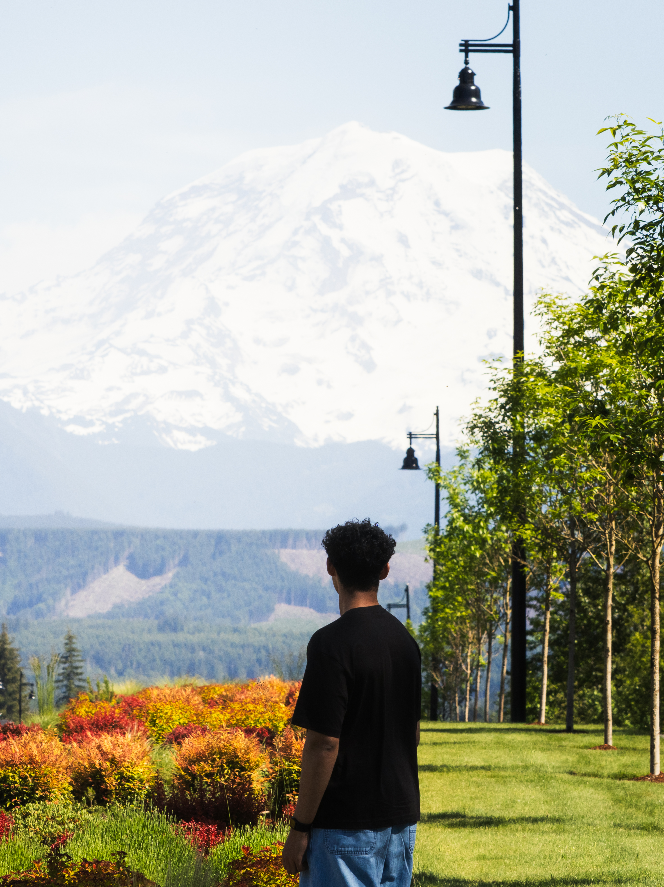

The Person Behind the Lens

Hi, I’m Atharv Kale, the eyes and vision behind Atharv Photography. As a high school student dedicated to the visual arts, I have spent years exploring the profound power of storytelling through a lens.
While I find focus in the strategy of chess and movement in the rhythm of tennis and basketball, my creative fulfillment comes from the quiet anticipation of a single frame. Photography, for me, is a deliberate search for the extraordinary within the ordinary.
With over eight years of experience spanning intimate portraiture to expansive landscapes, my work explores the delicate relationship between light, texture, and human emotion. I strive to create imagery that transcends the visual to become something felt.
Ultimately, I believe great photography is about capturing the silence that exists between moments. I am constantly evolving my craft, pushing the boundaries of my perspective to share a world that is raw, authentic, and unforgettable.